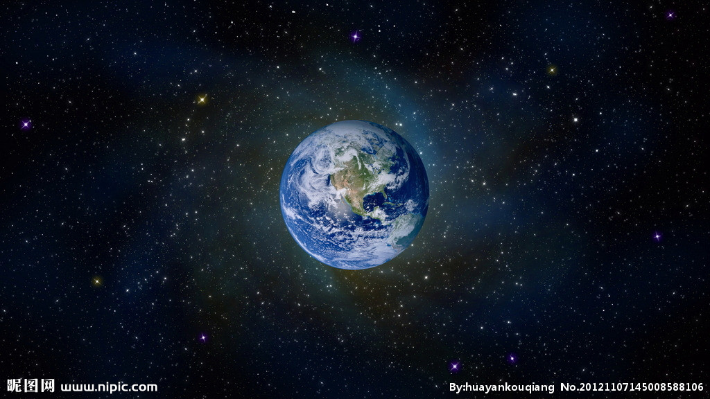
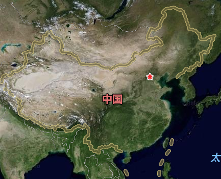
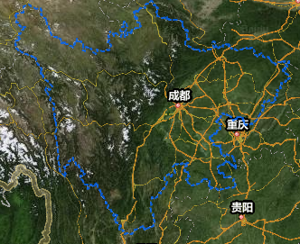

你居住的星球是？
没错，你居住的地方就是地球，地球是上百万种生物的家园，包括人类。地球是目前人类所知宇宙中唯一存在生命的天体。地球诞生于45.4亿年前，而生命诞生于地球诞生后的10亿年内。地球会与外层空间的其他天体相互作用，包括太阳和月球。当前，地球绕太阳公转一周所需的时间是自转的366.26倍，这段时间被叫做一恒星年，等于365.26太阳日。地球的地轴倾斜23°26′（与轨道平面的垂线倾斜23°26′），从而在星球表面产生了周期为1恒星年的季节变化。地球唯一的天然卫星，诞生于45.3亿年前的月球，造成了地球上的潮汐现象，稳定了地轴的倾角，并且减慢了地球的自转。(按确认键查看详情...) 
没错，这里就是我们的祖国。中国（China），位于东亚，是一个以华夏文明为主体、中华文化为基础，以汉族为主要民族的统一多民族国家，通用汉语。中国疆域内的各个民族统称为中华民族，龙是中华民族的象征。 中国是世界四大文明古国之一，有着悠久的历史，距今约5000年前，以中原地区为中心开始出现聚落组织进而成国家和朝代，后历经多次演变和朝代更迭，持续时间较长的朝代有夏、商、周、汉、晋、唐、宋、元、明、清等。中原王朝历史上不断与北方游牧民族交往、征战，众多民族融合成为中华民族。20世纪初辛亥革命后，中国的君主政体退出历史舞台，取而代之的是共和政体。1949年中华人民共和国成立后，在中国大陆建立了人民代表大会制度的政体。(按确认键查看详情...) 
没错，这里就是四川省，四川，西部第一大省。简称川或蜀，以益州、梓州、利州、夔州四路而得名。又因先秦时四川曾分属巴国（首都今中国重庆）、蜀国（首都今四川成都）两诸侯国，故别称“巴蜀”。 四川位于西南腹地，地处长江上游，与重庆、云南、贵州、西藏、青海、甘肃、陕西接壤；四川东部丘陵较多，西部山地较多，风光秀丽被誉为“天府之国”。四川资源丰富现拥有已探明储量的矿产资源132种，占全国资源种数的70%，为川气东送的起点。 如今四川经济发展很快，交通干线密集，是“西部综合交通枢纽”、“西部经济发展高地”。四川的经济总量位居西部第一，全国第八，其综合实力位居西部第一。以成渝为主体的经济区为中国第四大经济区。(按确认键查看详情...) 